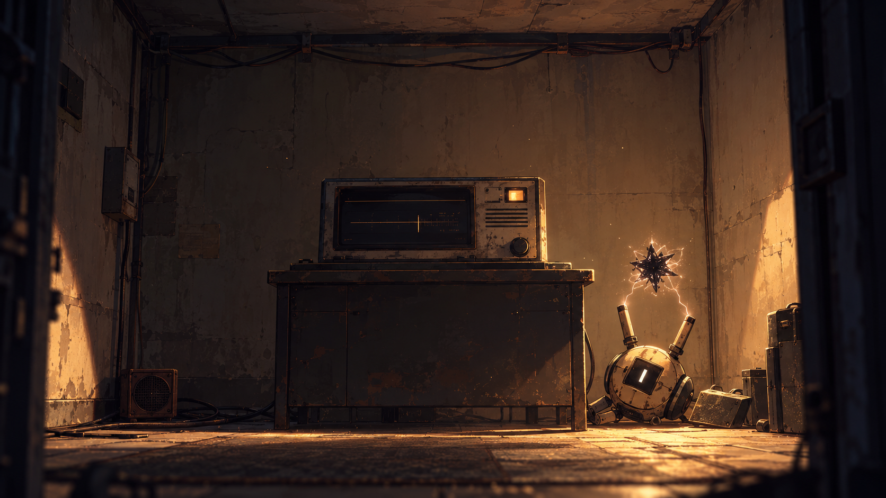

9/B · ARŞİV KAYDI 001hocam cok ozur dilerim yapacaktım ancak zaten geçikmişti sesler hiç ortama uygun değil
◉
ARŞİV KAYDI 001
Bir kayıt bulundu.
Ses dosyası: txt.wav
Kayıt hazır. Dinlemek için başlat düğmesine bas.
ANLATICI
Bir gün, hiçliğin ortasında bir oda görürsün...